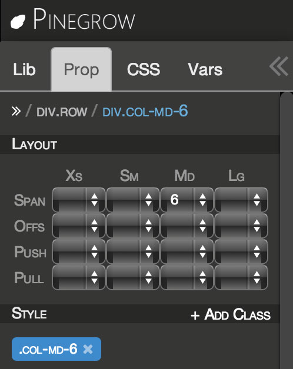
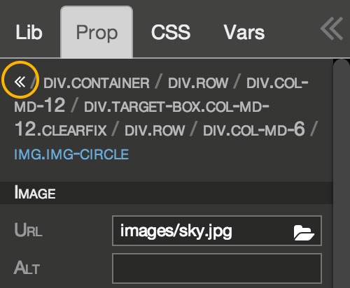

Become Pinegrow expert in 10 minutes and save hours every week
Lets play with our gray box again (below). Select any element in it and switch to Prop tab in the left panel. There you can edit element properties. Properties depend on the framework. In this example we are using Bootstrap so most of the properties are related to different Bootstrap options for elements. Check the official Bootstrap documentation for explanation.
Go ahead and experiment:
Cras justo odio, dapibus ac facilisis in, egestas eget quam. Donec id elit non mi porta gravida at eget metus. Nullam id dolor id nibh ultricies vehicula ut id elit.
Cras justo odio, dapibus ac facilisis in, egestas eget quam. Donec id elit non mi porta gravida at eget metus. Nullam id dolor id nibh ultricies vehicula ut id elit.
Cras justo odio, dapibus ac facilisis in, egestas eget quam. Donec id elit non mi porta gravida at eget metus. Nullam id dolor id nibh ultricies vehicula ut id elit.
Order a pizza from our fresh selection.
Many things in nature look just like pizza. See:
Element parents are shown at the top of the Prop tab in the form of breadcrumbs. Only one parent is shown by default. Click on the double right arrow at the beginning of breadcrumbs to expand the view. Collapse it in the same way. Clicking on any of the parents will select it. This is useful when you select a child element by mistake and want to get back to its parent.
Notice Style section in properties? We'll take a look at that in the third part of this amazing tutorial.
You already did two steps of the tutorial; there is only one more: Step 3 - Styling page with CSS rules.